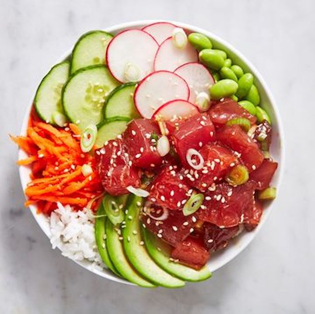

Ahi Poke Bowls
INGREDIENTS
- - 1/4 c. low-sodium soy sauce
- - 2 tsp. rice vinegar
- - 2 tsp. sesame oil
- - 1 tsp. freshly grated ginger
- - Pinch of crushed red pepper flakes
- - 2 green onions, thinly sliced, plus more for garnish
- - 1 tsp. toasted sesame seeds, plus more for garnish
- - 1 lb. sushi-grade ahi tuna, cut into bite-size pieces
DIRECTIONS
- 1st: In a large bowl, whisk together soy sauce, rice vinegar, sesame oil, ginger, red pepper flakes, green onions, and sesame seeds. Add tuna and toss to coat. Refrigerate for at least 15 minutes or up to 1 hour.
- 2nd: To serve, add rice to the bottom of four bowls. Top with tuna and toppings of your choice. Garnish with green onions and sesame seeds before serving.
- 3rd: For serving, you can use Cooked white or brown rice, sliced avocado, sliced cucumber, edaname, shredded carrots or sliced radish of your choice.